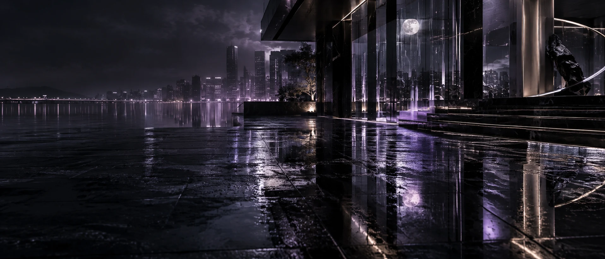

· FEATURE
NIGHT, 다시 밤을 뒤흔든다‘PHANTOM’으로 펼쳐낼
가장 치명적인 환상
데뷔 4년차 NIGHT가 새 앨범 ‘PHANTOM’과
타이틀곡 ‘ILLUSION’으로 돌아온다.
현실과 환상의 경계를 흐리는 새로운 밤이 시작된다.
NIGHT가 다시 자신들의 시간으로 돌아온다.
NIGHT는 9월 14일 새 앨범 ‘PHANTOM’을 발표하고 타이틀곡 ‘ILLUSION’으로 새로운 활동에 나선다.
DOHA, WOOHYUN, JIWOO, IHWAN, TAEHOON으로 구성된 NIGHT는 데뷔 이후 도시의 심야, 빛과 그림자, 꿈과 현실의 경계 등 ‘밤’이라는 중심 이미지를 끊임없이 변주하며 자신들만의 색을 구축해왔다.
이번 ‘PHANTOM’은 그동안 NIGHT가 쌓아온 세계를 다시 한번 확장하는 앨범이다.
타이틀곡 ‘ILLUSION’을 중심으로 베일, 잔상, 빗속의 네온, 물 위에 비친 달빛과 반사 등 실재하는 것과 존재하지 않는 것 사이의 이미지를 하나의 흐름으로 연결한다.
NIGHT가 데뷔 당시부터 유지해온 어둡고 도시적인 감각은 그대로 남아 있지만, ‘PHANTOM’에서는 보다 몽환적이고 비현실적인 방향으로 확장된다.
현재의 NIGHT는 데뷔 당시와는 다른 위치에 서 있다.
Castle Entertainment의 첫 아이돌 그룹으로 출발한 NIGHT는 데뷔 초기부터 해외에서 빠르게 주목받았고, 이후 멤버 구성의 변화를 거쳐 현재의 5인 체제를 완성했다.
‘LUCID’를 통해 현재 5인의 음악적·비주얼 정체성을 안정적으로 구축한 뒤 첫 단독 콘서트와 해외 활동 확대까지 이어가며 활동 영역 역시 넓어졌다.
그렇기에 ‘PHANTOM’은 단순히 새로운 콘셉트를 제시하는 앨범이라기보다 NIGHT가 지난 시간 동안 구축해온 ‘밤’을 현재의 시점에서 다시 해석하는 컴백에 가깝다.
데뷔 4년차에 접어든 NIGHT가 ‘ILLUSION’을 통해 어떤 새로운 장면을 보여줄지 관심이 모인다.
REACTIONS
- 익명 · ***
아 NIGHT 컴백 드디어ㅋㅋㅋㅋ
- 익명 · ***
ILLUSION 제목 뜨자마자 그냥 NIGHT라고 생각함.
- 익명 · ***
트랙 제목들 연결되는 거 봐. VEIL부터 REFLECTION까지 분위기 미쳤다.
- 익명 · ***
4년차인데 자기 색 안 놓치는 거 좋음.
- 익명 · ***
LUCID 다음이 PHANTOM인 거 너무 자연스럽다.
- 익명 · ***
이번 비주얼 진짜 NIGHT 이름 그대로네.
- 익명 · ***
캐슬은 NIGHT 컴백할 때마다 비주얼에 진심인 게 느껴짐ㅋㅋㅋ
- 익명 · ***
처음에는 패션 회사가 아이돌을 왜 만드냐고 했었는데 벌써 4년차네.
- 익명 · ***
데뷔 때 해외에서 먼저 반응 오던 팀이 여기까지 왔구나.
- 익명 · ***
이번에도 취향 엄청 갈릴 것 같은데 나는 이런 NIGHT가 좋음.
- 익명 · ***
노래는 직접 들어봐야 알 듯. 콘셉트는 확실하네.
- 익명 · ***
ILLUSION 무대 어떻게 나올지가 제일 궁금함.